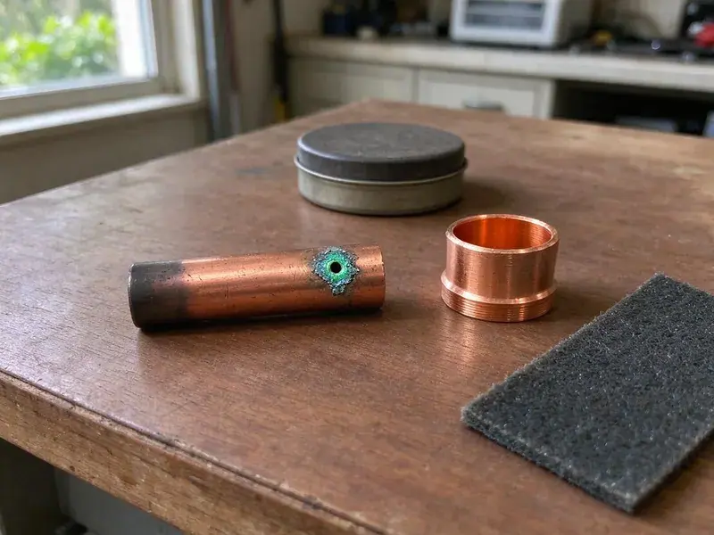

Underground Pipe Repair in Gainesville, FL
HDF Plumbing finds underground leaks in Gainesville, FL with acoustic and tracer gear, then digs only where the equipment says to.
- Same-Day Leak Visits
- Small, Targeted Excavations
- Minimal-Dig Methods
- Acoustic Leak Locating
Get the Buried Leak Located in Gainesville, FL
Shut the meter valve if water is surfacing, and we will walk you through it on the phone.
Buried Water and Sewer Line Repair in Gainesville, FL
HDF Plumbing repairs water services, sewer laterals and buried lines to pools, sheds and guest houses. Each one fails differently. Soil type, pipe depth and the material in the ground all change how we approach the job, so the first trip usually includes locating, digging and the repair. No hand-offs between companies.
Our expertise includes:
- Root and settlement damage repair
- Acoustic and tracer gas leak detection on buried lines
- Pipe path tracing with electronic locators

Additional Plumbing Repair Services in Gainesville, FL
We offer expert plumbing repair services across Gainesville, FL to fix leaks, restore flow, and keep your system running smoothly.


Customers
Why Choose HDF Plumbing for Underground Pipe Repair in Gainesville, FL?
A bad underground repair can wreck a foundation or contaminate drinking water. We do not cut corners. Our crews use fittings listed for direct burial, bed the pipe in sand or fine fill, keeping it at code depth so the repair holds up to weather and weight. We test before backfill.
- Local Code, We work to Florida plumbing code on depth, bedding and fittings.
- Clean Sites, Plywood under equipment, spoils on tarps and the hole compacted, not mounded.
- Pinpoint Locating, Acoustic and electronic tools narrow the leak to within a few feet.
Citywide Coverage
Rental owners and HOAs across Gainesville call us for repeat leaks on the same lines. Aging pipe is the usual cause. We document each repair and track every failure by date and location so replacement decisions are easier to make.
Experienced Team
Every lead plumber on our underground crew is licensed and trained on shoring and trench safety. Rock does not slow them down. They have dug through hardpan, caliche, clay and old fill, switching to a shovel whenever a marked line gets close.
Safety-First Approach
Drinking water lines have to stay clean during a repair. We keep dirt out of the pipe. New pipe stays capped until it is joined, then we flush the service before you use the water.
Trusted Certified Gainesville Plumbing Services Professionals
At HDF Plumbing, we take pride in licensed, certified plumbing services throughout Gainesville, FL. Credentials matter in this trade. Every repair, install and maintenance visit follows strict safety and quality rules, and the plumbers doing the work carry recognized industry credentials.
Call Us Now PHCC Plumbing Contractor Recognition
PHCC Plumbing Contractor Recognition Better Business Bureau (BBB) Accreditation
Better Business Bureau (BBB) Accreditation Angi Certified Pro
Angi Certified Pro ISO 9001 Quality Management Certification
ISO 9001 Quality Management CertificationUnderground Pipe Repair Work We Handle in Gainesville, FL
Emergency Underground Pipe Services in Gainesville
Water bubbling up through the lawn means pressure is escaping somewhere. Do not wait on it. Our after-hours crew locates the break, digs it out and makes a permanent repair on the spot when the pipe and fittings allow, which is most of the time. Shut the meter valve first.

Polybutylene Pipe Replacement in Gainesville
Polybutylene was used in a lot of homes built in the 1980s and early 1990s. It splits suddenly. The gray plastic turns brittle as chlorine in the water attacks it, and buried runs tend to split at fittings or where the pipe was bent tight during installation. Patching it just moves the next leak. We use PEX or copper.
Emergency Underground Pipe Repair in Gainesville
A burst service line can flood a yard and wash out the soil under a driveway. Turn off water at the meter. We talk you through the shutoff on the phone and send a crew to locate and expose the break, then repair it and restore water as fast as the dig and the fittings allow. Most get fixed the same day.
HOA and Multifamily Underground Repair in Gainesville
HOA common areas and apartment complexes have long buried runs under parking and sidewalks. Tenants still need to get in. We locate carefully to avoid unnecessary concrete cutting, schedule work around residents, and document every repair with photos and test results that property managers can hand to the board or the insurer. We work with your schedule.
Pipe Bursting Services in Gainesville, FL
Pipe bursting pulls a new pipe through the old one while breaking the old pipe outward. New pipe follows the old path. A bursting head on a cable splits clay, cast iron or brittle plastic, while a continuous HDPE pipe is pulled in behind at the same diameter or bigger. Collapsed sections are fine. Lining cannot do that.
Main Water Line Repair in Gainesville
Your main water line runs from the meter box to the house under constant pressure. Leaks never fix themselves. A spinning meter dial with every fixture off, falling pressure or a wet spot that never dries all point to a main line leak, and we locate it, expose the pipe and splice in a new section with approved fittings. Old galvanized usually gets replaced.
Foundation Leak Detection and Repair in Gainesville, FL
A leak under a slab often shows up as a warm spot on the floor. Sometimes you hear water running. We isolate hot and cold lines with pressure tests and locate the leak with acoustic gear and thermal imaging, choosing between a targeted floor cut and a reroute through the walls or attic. We explain the tradeoffs.

Galvanized and Polybutylene Line Replacement in Gainesville
Galvanized steel rusts from the inside until little water gets through. Polybutylene cracks without warning. If your buried service is either one, patches are usually temporary, which is why we recommend a full swap to PEX or copper threaded along the existing route. You will notice the pressure.
Local Underground Pipe Repair in Gainesville, FL
Most underground repairs in Gainesville are scheduled within a day or two of locating. Active leaks go first. Phone (904) 925-7356 with what you are seeing, and we will walk you through shutting off the water until the crew arrives.
Our Gainesville crew knows how deep service lines usually run around here and which neighborhoods still have galvanized or polybutylene. It saves time on site. It also means fewer surprises when the hole is open, because we bring the right couplings for the pipe we expect.
HDF Plumbing at a Glance
- Licensed and insured plumbers serving Gainesville, FL
- 24/7 emergency service with same-day scheduling
- Upfront, flat-rate pricing before work begins
- 4.9-star rated by 739+ Florida customers
Gainesville Map
Gainesville Information
- Population
- 145,812
- Area codes
- 352/941/407
- Service area
- Gainesville and communities within 40 miles
- Nearby
- Ocala, The Villages, Jacksonville, St. Augustine
Buried pipe in Gainesville, FL takes stress from shifting ground, and old joints and thin-wall pipe are the first to leak. A high water table across much of Florida affects drainage, septic design, and how deeply crews can dig for underground repairs.
Expert Services
Reach out to HDF Plumbing for reliable plumbing work done by licensed pros in Gainesville, FL.
Our Specialized Plumbing Services in Gainesville, FL
At HDF Plumbing, you get every kind of plumbing service from one company across Gainesville, FL. We go from leak detection all the way to full system installations, for homes and commercial buildings, and we do it quickly at a fair price. Take a look at our core services below:


How Our Underground Pipe Repair Process Works in Gainesville, FL
Three or four steps, usually done in a day or two.
Book the Visit
Call (904) 925-7356 to set a time. We usually get out within a day.
Find the Leak
We trace the pipe and listen for the leak without digging. You see where it is.
Repair & Restore
We give you the options and price, make the repair, then pressure test it and backfill.
Frequently Asked Questions About Underground Pipe Repair in Gainesville
A minor spot repair can start around $500. Replacement is a bigger number. Trenchless full line replacements often run $3,000 to $10,000 or more, with pipe material, depth, length, the repair method and how much of the yard needs restoring setting most of the price. You get a written quote first.
Yes. Workmanship is warrantied in writing. The length depends on the type of repair and the materials used, with the terms laid out in your quote before you approve. Pipe carries its own coverage.
Many utilities offer a one-time leak adjustment. Ask them about it. Most want proof that the leak was repaired promptly, and we give you an invoice and repair documentation that shows the date, location and fix. Rules differ by provider.
Wet spots or extra-green grass are the classic signs. So is a jump in the bill. A sudden drop in pressure, a sewage or sulfur smell in the yard, or gurgling drains can all point to a buried break in either the water service or the sewer lateral. A turning meter confirms a leak.
It is pipe repair or replacement through small access pits. We do it regularly. Pipe bursting and cured-in-place lining are the two main methods we use for Gainesville homeowners, so the yard and concrete mostly stay as they are. We check yours first.
Water lines get PEX or Type K copper. Both are burial rated. Sewer lines get Schedule 40 PVC, and the final choice depends on the existing pipe, the soil and what your local code allows. Couplings get sized to both pipes.
Yes, every common material. Old and new. PVC, ABS, cast iron, copper, PEX, clay, galvanized and polybutylene all come up, and each one needs its own transition fitting when we join new pipe to the old. Common fittings ride on the truck.
Every repair is warrantied. The terms are in writing. Our workmanship warranty covers the repair, while the parts carry separate manufacturer coverage. We explain it before we start.
Hear From Customers Who Hired Our Plumbing Experts

Tyler J.
We bought a taller comfort height toilet for my dad, who just had knee surgery. The plumber pulled the old one, found the flange was cracked, and replaced it before setting the new bowl. Took about two hours.
Toilet Installation · Gainesville, FL
James P.
Our restaurant had a slow leak at the hand sink that was rotting the cabinet base. HDF Plumbing came in at six in the morning before prep, replaced the trap and both supply lines, and was packed up before my first cook clocked in.
Commercial Plumbing · St. Augustine, FL
Patricia H.
We had a slab leak that two other companies could not find. HDF Plumbing located it in under an hour with a listening device. They rerouted the line through the attic instead of breaking up the floor, so we kept our kitchen tile.
Slab Leak Repair · The Villages, FL
Megan L.
Our upstairs tub drained so slowly that every shower turned into a bath. HDF Plumbing pulled a wad of hair out of the stopper and then snaked the line past the trap. Three months later it still drains fast.
Drain Cleaning · Palm Coast, FL
Greg S.
I manage a small strip center with six tenants. HDF Plumbing handles our annual backflow testing and fixed a recurring clog in the shared sewer line that had been backing into the nail salon. Their reports come in clean and on time.
Commercial Plumbing · Jacksonville, FLBrian W.
I smelled gas behind the dryer and called right away. The plumber found a corroded flex connector, replaced it, and pressure tested the whole line before turning the gas back on. He let me watch the gauge hold steady for fifteen minutes.
Gas Line Repair · St. Augustine, FL